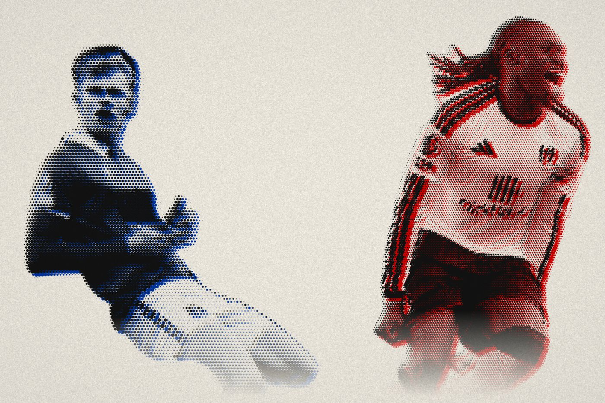

The Fix Deep dive
Branthwaite or Bassey?
United want a left-sided centre-back, and these are the two names on the list. One gives you Maguire's presence in the air. The other gives you pace and a defender who's hard to get past. Two seasons of numbers, against every centre-back in the league.
Branthwaite for height at 195cm, among 51 Premier League centre-backs. Maguire is 194cm
Aerial duels Branthwaite wins, 3rd of 51. Bassey wins 56%, 34th
Bassey for sprints per 90, and 11th for top speed. Branthwaite is 34th and 14th
The short version
Pochettino wants a left-sided centre-back, and both of these play there: FotMob logs both as left centre-backs. They're very different defenders, though, and the choice depends on what United are replacing.
Dominant in the air, 6ft 5in and quick for his size. He'd replace what United lose if Maguire goes. The worry is fitness: 681 league minutes last season.
Rapid, aggressive and hard to dribble past, and he has been available every season. But he's 9cm shorter and loses a lot more in the air.
The job
Reports say Branthwaite and Bassey are high on United's list for the left side of the back line, with Lisandro Martínez's future uncertain (GOAL). Sky reported on 18 November that the club wants a centre-back in January, with Pochettino having a say in who (via Sky Sports News).
Then there's Maguire. He's signed until June 2027 with an option for a further year (Manchester United), so he isn't leaving yet. But he's 33, and when he does go, United lose one of the best headers of a ball in the league: he wins 74% of his aerial duels, 2nd of 51 centre-backs. Lisandro, United's other senior left-sided centre-back, is the shortest centre-back in the group at 178cm.
The physical map
Every Premier League centre-back with 1,350+ league minutes across last season and this one. Across is how often he wins his headers, up is top speed. Top right is the rare one: big, dominant in the air and quick.
Branthwaite sits where Maguire does in the air, and he's nearly 2km/h quicker at top speed. Bassey is one of the fastest centre-backs in the league, but in the air he's in the bottom third.
Head to head
Where each one ranks among the 51 centre-backs on every measure. Further right is better. Switch Maguire and Lisandro on to see who United would be replacing.
Defending
Raw tackle counts flatter defenders in teams that don't have the ball, and Everton have had 44% to 45% of it against Fulham's 52% to 56%. So we adjust tackles and interceptions for possession. Once you do, Bassey comes out ahead: 9th of 51, against Branthwaite's 20th.
Bassey is also one of the hardest centre-backs in the league to dribble past (0.23 times per 90, 9th fewest). Branthwaite gets beaten more often (0.40, 32nd). Branthwaite makes more clearances, partly because Everton spend more time without the ball.
| Per 90, both seasons | Branthwaite | Bassey | Maguire |
|---|---|---|---|
| Aerial duels won | 3.89 | 1.43 | 3.18 |
| Aerial win % | 73.1% | 56.0% | 74.0% |
| Tackles + interceptions (possession-adjusted) | 2.58 | 2.98 | 2.31 |
| Times dribbled past | 0.40 | 0.23 | 0.31 |
| Recoveries | 3.49 | 3.94 | 3.74 |
| Clearances | 6.07 | 3.73 | 5.31 |
On the ball
Neither is a standout passer. Bassey sees more of the ball (56 accurate passes per 90 against Branthwaite's 40) and is more secure with it (88% against 85%). Branthwaite's 85% is 38th of 51, and some of that is team context: Everton have much less of the ball. Their long passing is close: about 2.5 accurate long balls per 90 each.
For a Pochettino side that wants to build from the back, Bassey is the more comfortable on the ball of the two. Lisandro, the man he might be replacing, is better than both: 7th of 51 for accurate long balls.
Who's always available
League minutes, last four seasons. This is the biggest difference between them.
Branthwaite was an ever-present in 2023/24 (3,117 minutes), then lost most of last season to injury: 681 minutes, and only seven starts. He's started all ten league games he's played this season, but it's the reason a reported €90m price looks steep (FootballTransfers). Bassey has played 2,300 to 3,074 minutes in each of the last three full seasons.
The contracts point the same way. Bassey's runs to June 2027, so Fulham are selling from a weaker position. Branthwaite is tied down until 2030 (both from FotMob).
So who do you take?
If the brief is "replace Maguire", he's the only one of the two who does it. He's as tall, wins as many headers and covers the ground behind better. You're paying a big fee for a player who missed most of last season.
If the brief is "a quick, aggressive left-sided centre-back for a high line", he's the fitter option, and FotMob values him at about half Branthwaite's price (€27m against €50m). You'd need height somewhere else in the back four.
Who are you taking?
Method and sources
- Data: FotMob (Opta) season stats for Branthwaite, Bassey and every Premier League centre-back, pulled 27 Nov 2026. Heights, positions and contracts are from FotMob too.
- Comparison set: players whose main FotMob position is centre-back (left, right or central), 2025/26 and 2026/27 combined, min 1,350 minutes: 51 players. Combining the two seasons gives Branthwaite a fair sample (1,572 minutes) after his injury.
- Possession adjustment: tackles plus interceptions × 50 ÷ the opponent's share of the ball, season by season, using FotMob team possession.
- Physical data: top speed is the fastest recorded in either season; sprints are counted per 90. These come from FotMob's tracking-based physical stats.
- Reports, not data: United's interest, Lisandro's future and Branthwaite's price are as reported by the outlets linked above. We haven't treated any of them as fact.
- What we didn't have: tracking of where each one defends, or possession-value models. Aerial volume depends on how direct a team is, so we lean on win rate.